CS 143 / Project 2 / Local Feature Matching
Goal
The goal of this project is to implement a local feature matcher that will detect local features in two images taken of the same object from different view points, under different illumination and find their correspondence.
This is done in 3 steps:
- Interest point detection: Find interest points in each image
- Local feature description: Compute a descriptor vector for each interest point
- Feature matching: Find correspondence between features of 2 images
Interest point detection
Interest points (or key points) are found by examining each small window in a given image. If shifting a window in any direction gives a large change in intensity then there's a high change that the window contains a key point.
I implemented the interest point detector based on the algorithm described in the lecture note and Sleziski Algorithm 4.1:
- Compute the x and y gradients of the image by convolving it with a derivative of Gaussian (variance = 1), call them Ix and Iy
- Compute Ixx = Ix.*Ix, Iyy = Iy.*Iy, Ixy = Ix.*Iy (elements in the second moment matrix)
- Convolve each of the three images above with a larger Gaussian (variance = 2), call them g(Ixx), g(Iyy), g(Ixy)
- Compute the cornerness function given by g(Ixx)g(Iyy) - g(Ixy)^2- alpha*(g(Ixx) + g(Iyy))^2
- Peform non-maxima suppression
I tried to do non-maxima suppression in two ways:
- Make a sliding window across the image, keep only the maxima in each window
- Threshold the cornerness function above a certain threshold, keep only the local maxima in each connected component
The results for each way of doing non-maxima supression is shown belown. Using connected components is much faster (1.44s) than using a sliding window (16.853s) while the results are very similar. Moreover, we can see that using a sliding window is more susceptible to edges than using connected components.
| Sliding window |
Connected components |
| 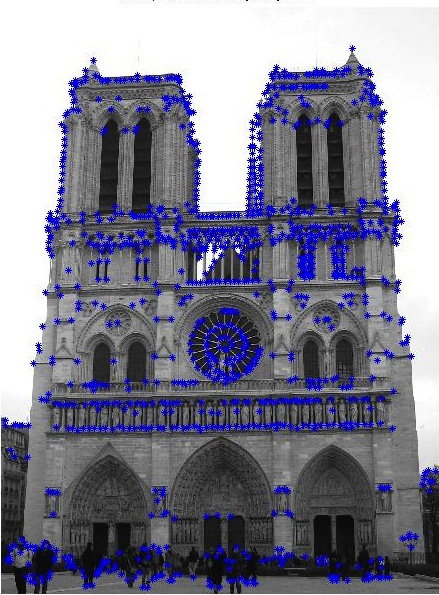 |
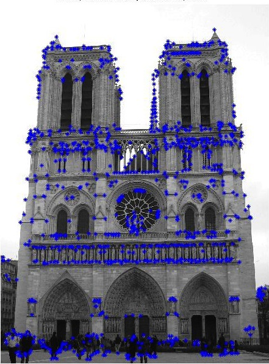 |
| 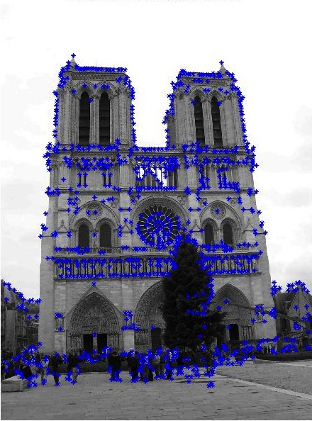 |
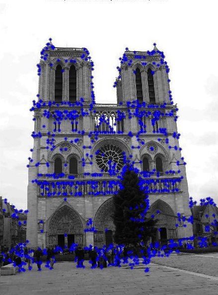 |
Local feature description
The local feature descriptors are computed using SIFT as described in lecture note:
- Get a frame of size feature_width x feature_width surrounding each key point
- Divide each frame into 16 cells (4 x 4)
- Compute the gradient histogram for each cell by binning (8 bins)
- The resulting descriptor will be formed by concatenating the gradient histograms of the 16 cells (16x8=128 dimensions)
| One sample frame |
| Frame |
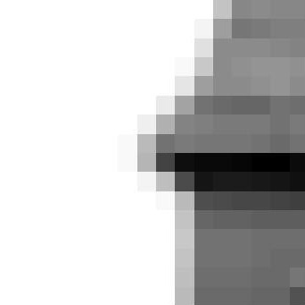 |
| Horizontal gradient |
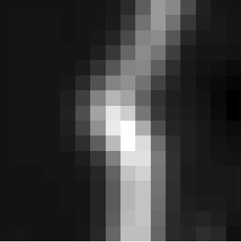 |
| Vertical gradient |
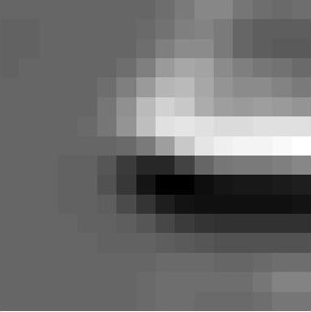 |
| Binned gradient orientations |
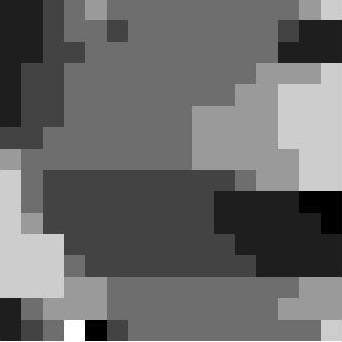 |
| Gradient magnitude |
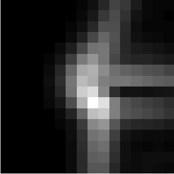 |
Feature matching
The feature matching phase is done using the ratio test as described in lecture note and Szeliski 4.1.3
- Compute the distance matrix between the set of key points of the two images
- Sort the distance matrix by row
- Take the rows that has the ratio of the nearest neighbor and the second nearest neighbor below a certain threshold
Final results
| 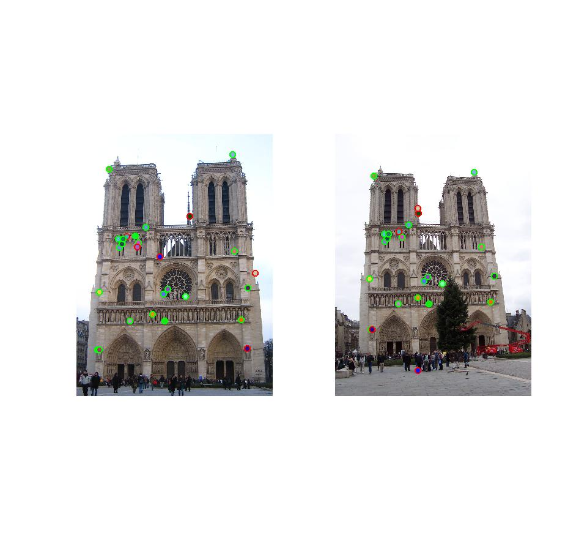 |
| 21 good matches, 6 bad matches (78%) |
| 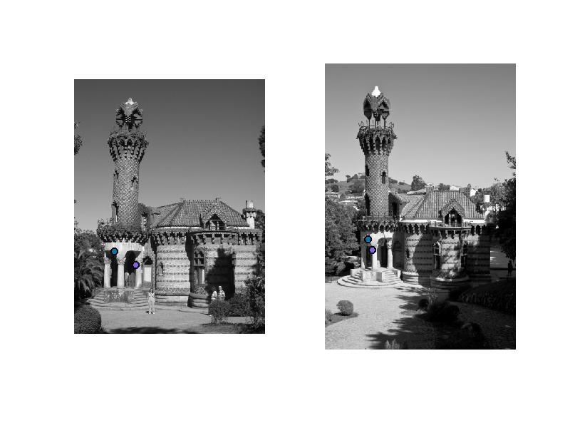 |
| 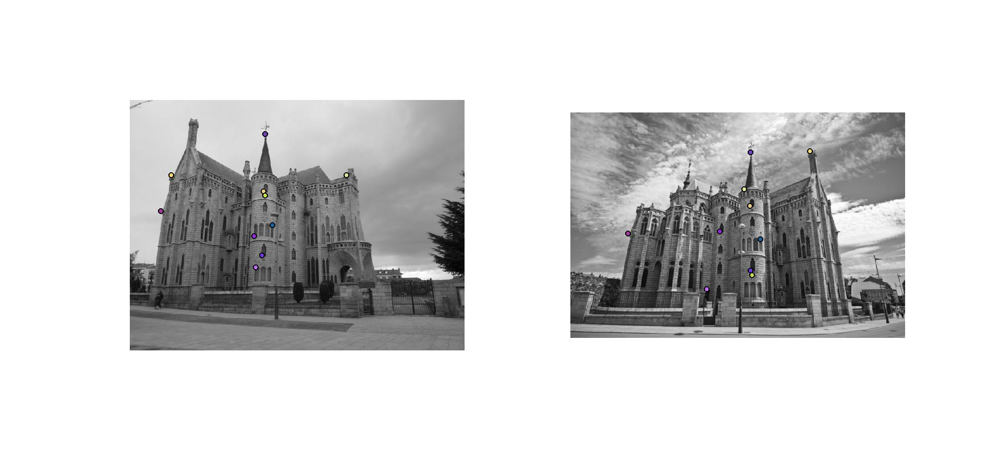 |
|
| 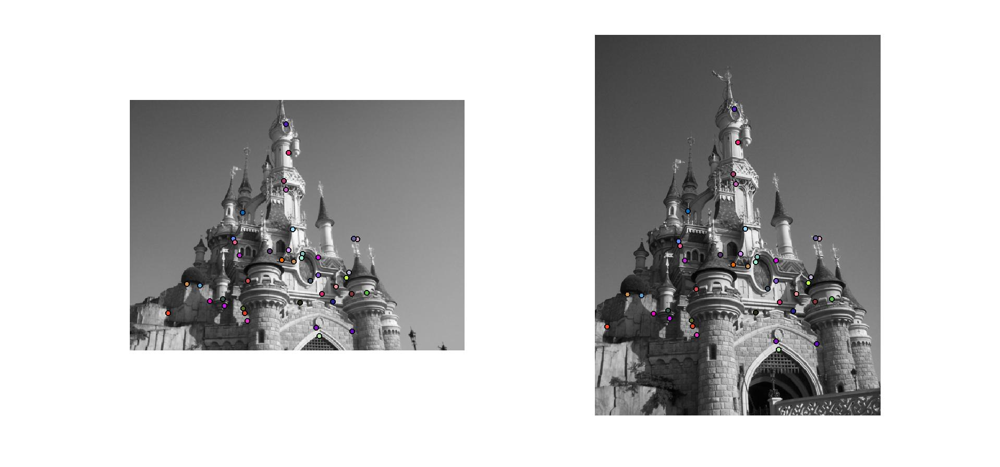 |
Key Takeaways
- When finding interest points, using threshold and then find local maxima of connected components is much faster than using a sliding window while producing the same results (or even better)
- Since we are using a fixed frame size (feature_width), choosing two images of similar sizes will produce much better results
- Since the frame size is only 16x16, the variance of the gaussian used to compute horizontal and vertical gradients shouldn't be too big. I improved the performance from 50% to 78% by changing the variance from 5 to 1
- Clamping the gradient magnitude to 0.2 doesn't make any difference because almost all the values are less than 0.2